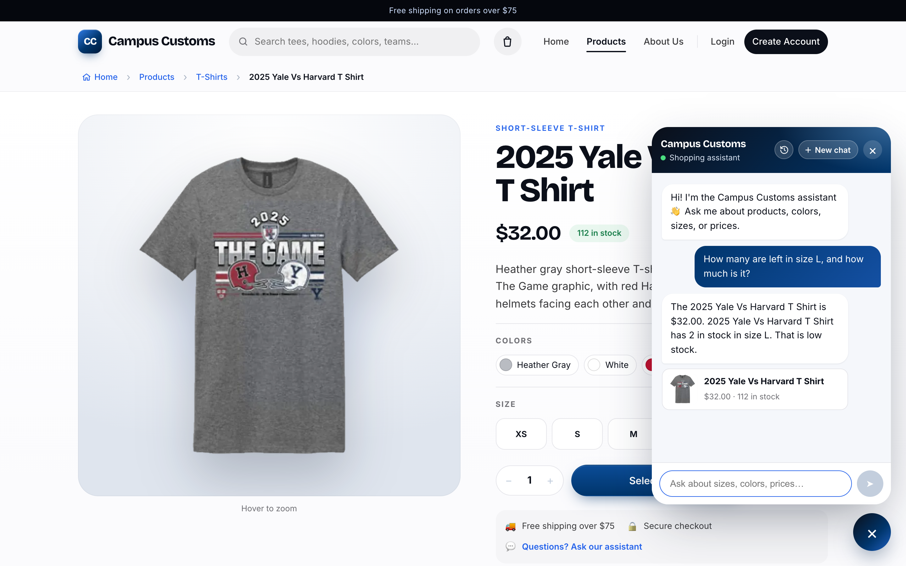
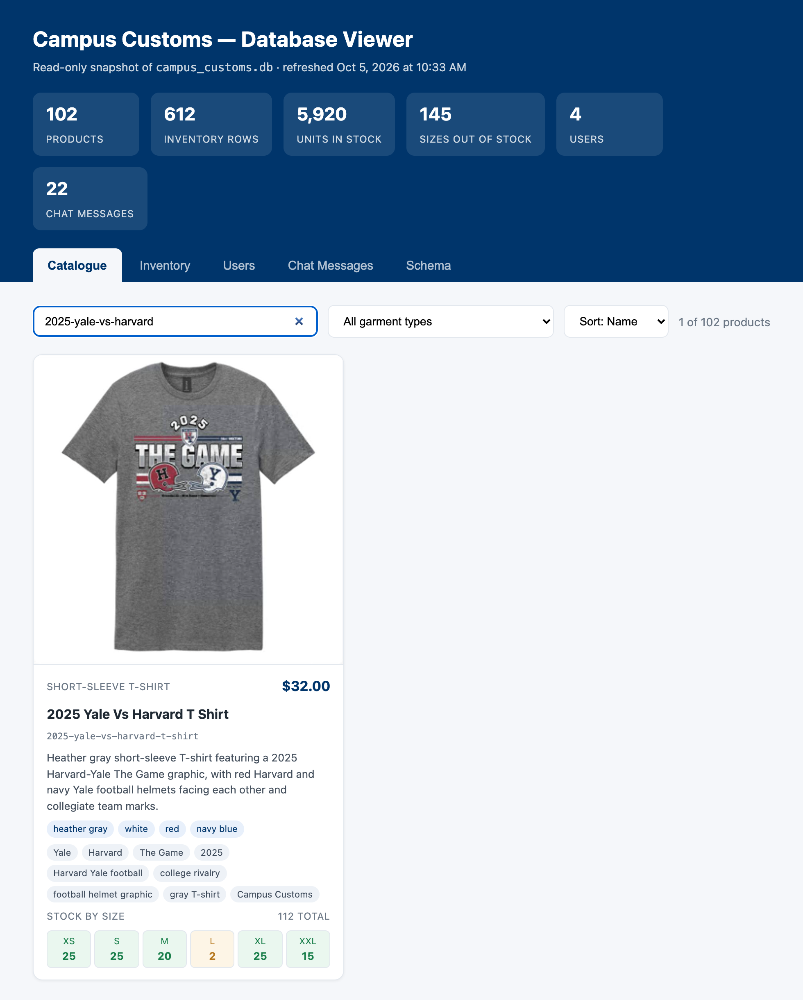
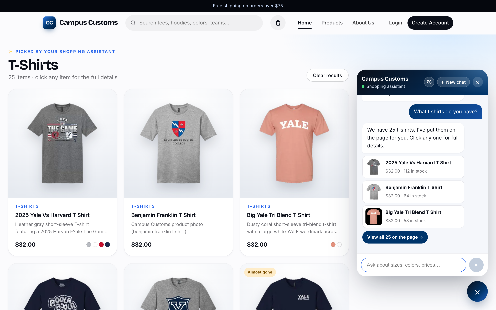
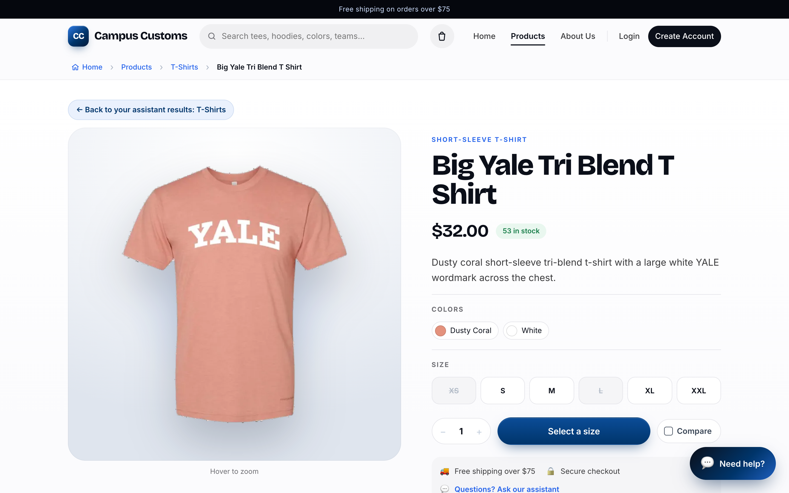
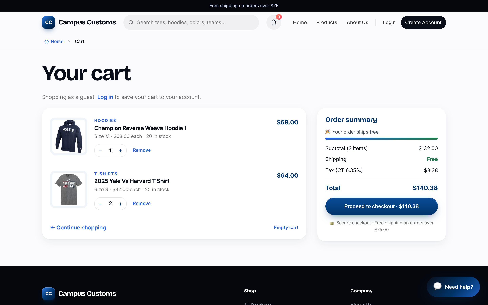

Check 1 — Chat checks the inventory level of an item
Asked on the product page for the 2025 Yale Vs Harvard T Shirt: "How many are left in size L, and how much is it?"


campus_customs.db. The database viewer shows the same product: price $32.00, size L = 2, and 112 in total
(XS 25, S 25, M 20, L 2, XL 25, XXL 15). The chat's numbers match the database exactly; the assistant didn't make them up.
Setup note: no Anthropic API key was set for this test, so the chat ran in its built-in fallback mode. That mode looks up price and stock with the same database functions the AI agent's tools use.
Check 2 — Dynamic search result cards after a category question
Asked in the chat on the Home page: "What t shirts do you have?"


Check 3 — Usability feature from Problem 9: shopping cart with total
Added a Champion Reverse Weave Hoodie 1 (size M, ×1) and two 2025 Yale Vs Harvard T Shirts (size S, ×2), then opened the cart.
